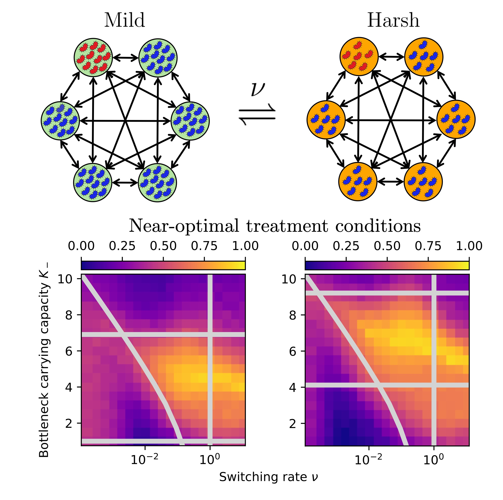
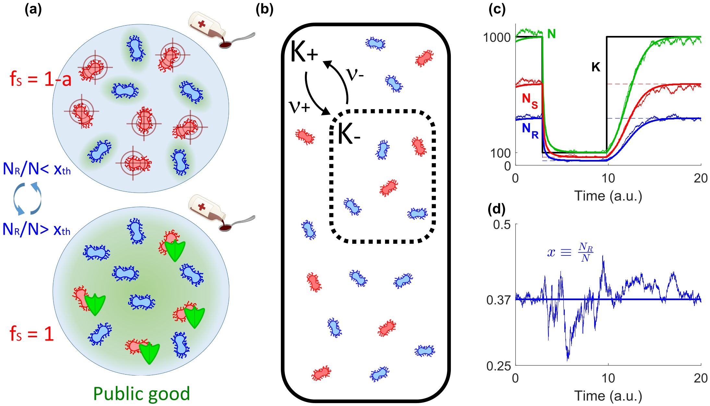
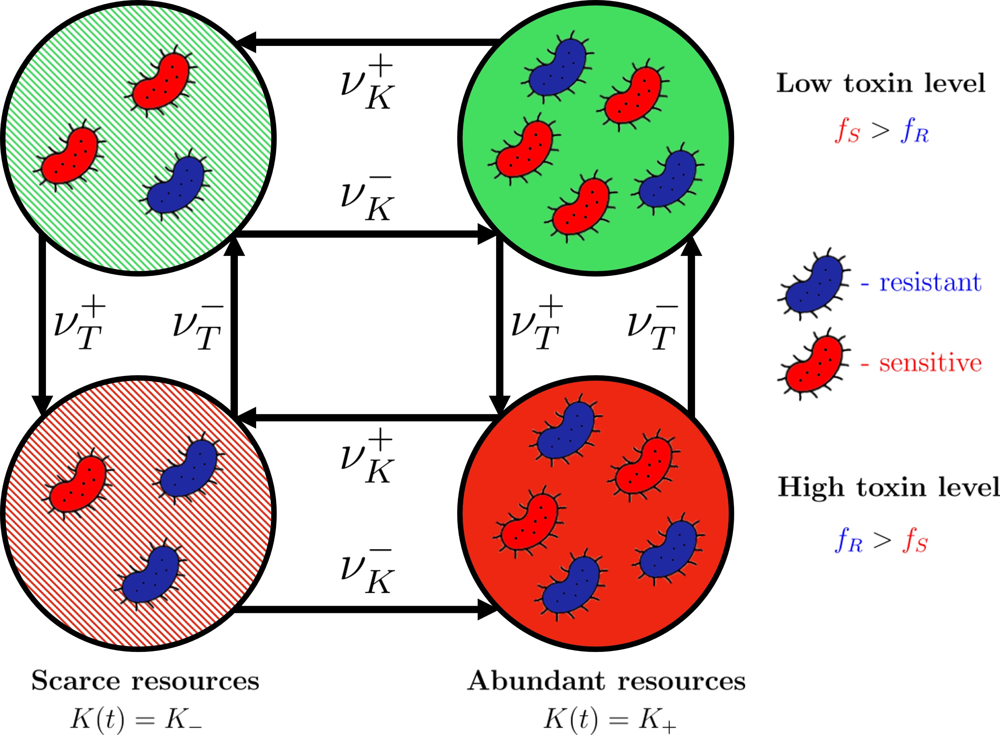
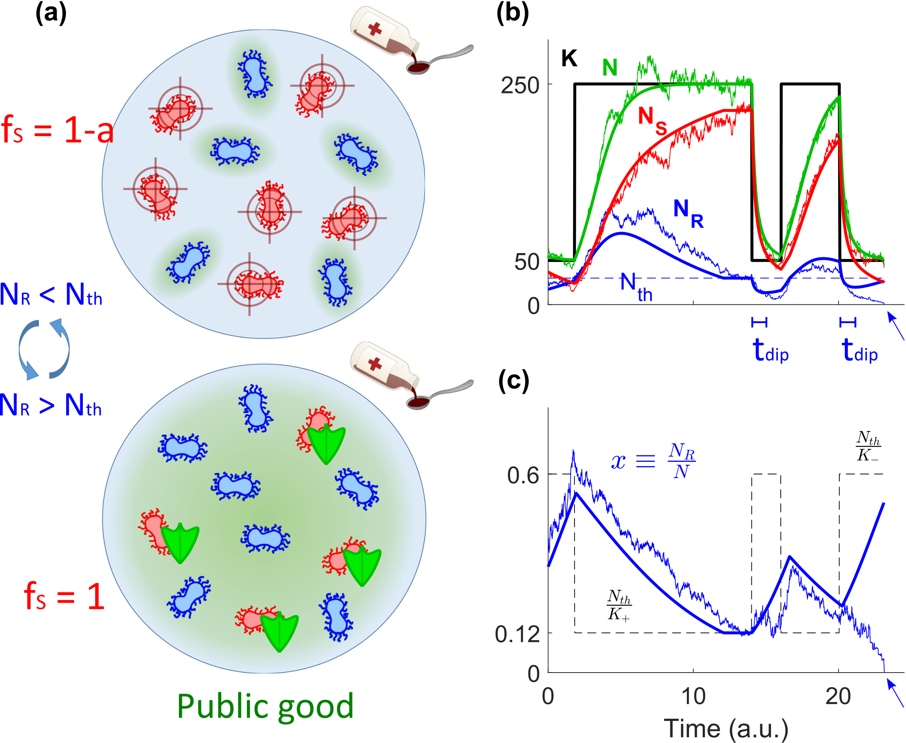

Fixation and extinction in time‑fluctuating spatially structured metapopulations
Phys. Rev. Res., Nov 2025

Phys. Rev. Res., Nov 2025

J. Phys. A: Math. Theor., Jun 2024

New J. Phys., Dec 2023

J. R. Soc. Interface, Nov 2023

PhD thesis, University of Leeds, 2025